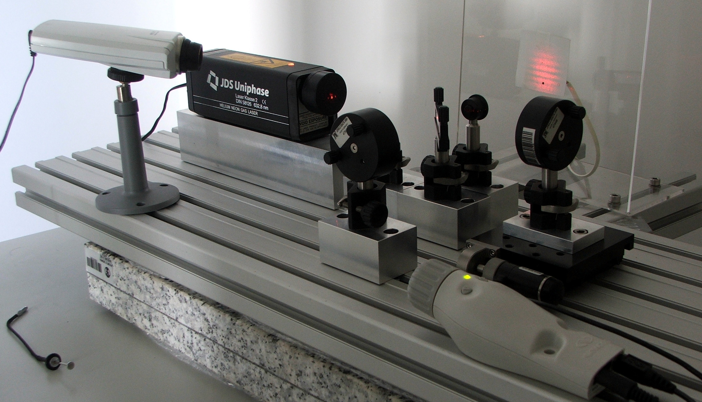
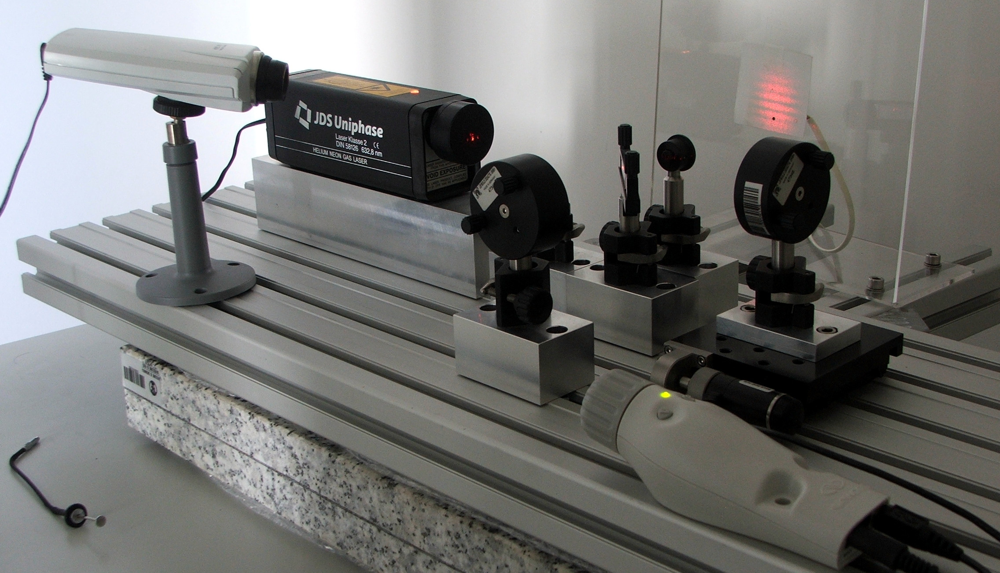

Introdução
Esta apresentação fez parte da documentação para um laboratório remoto que dava acesso ao nosso interferómetro de Michelson de forma remota, usando uma interface Web.

Jaime E. Villate. 15 de Setembro de 2006
Faculdade de Engenharia,
Universidade do Porto, Portugal
Email: villate@fe.up.pt
Esta apresentação fez parte da documentação para um laboratório remoto que dava acesso ao nosso interferómetro de Michelson de forma remota, usando uma interface Web.
